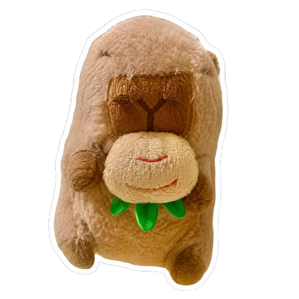

click abi : )I'm sorry if I couldn't get myself to give you a handwritten letter, so I spent a while coding this webpage for you.. I don't think I can face you yet and I know it still feels heavy for the both of us.
to be honest zild, I already cannot bear to keep this relationship if it only does is hurt you. when things go wrong, my first instinct is to leave because after all, all I really wanted was the both of us to be happy. and if I'm the reason of your hurting.. might as well end it.
but lately I catch myself praying that we'll find our way back to each other. during the days I spent without your presence made me realize how you've been sewing pieces of me, how you've been changing me slowly. bit by bit.
you've always made me wanna be a better person, z. and now, I want to be better for us.
I'm sorry if I was insensitive. I honestly didn't think it hurt you this much, knowing how close I've always been to my friends. but I understand now.
I just want you to know it has always been only you, z. the only person I think of when I wake up at day and the only person in my prayers at night. please don't overthink about any other because it's always been you. and you only..
what we have holds a special place in my heart and I wouldn't choose any other person to have done all the things we've done but you only. I value us a lot, and I'm sorry if I struggle to show it. you matter to me, z.
we may have terrible days, we may have times when everything is going well, or days when we don't understand each other at all but during those bad ones showed me that there is no such thing as perfect and there will always be room for growth for the both of us.
and just like how you choose me despite the doubts, misunderstandings, and imperfections, I want to choose you too. and I know it won't be easy.
after all, it's you who I want to figure things out with. it's your hands I wanna hold when I'm uncertain. It's your voice I wanna hear when it's been a long day.
It's only you who I want to be with.
bebi, I'm sorry for making you overthink. I hope I can make it up to you.
- shan